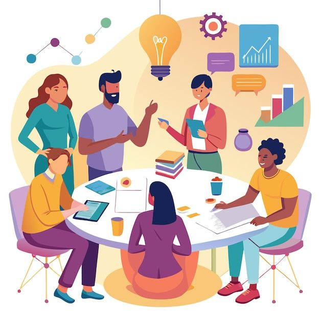
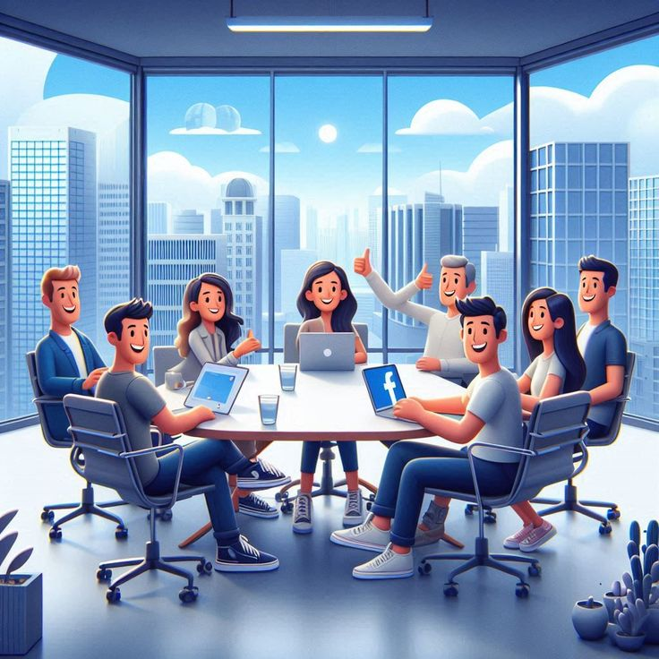
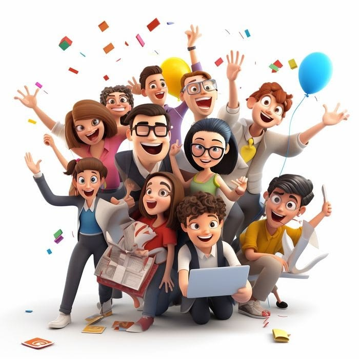
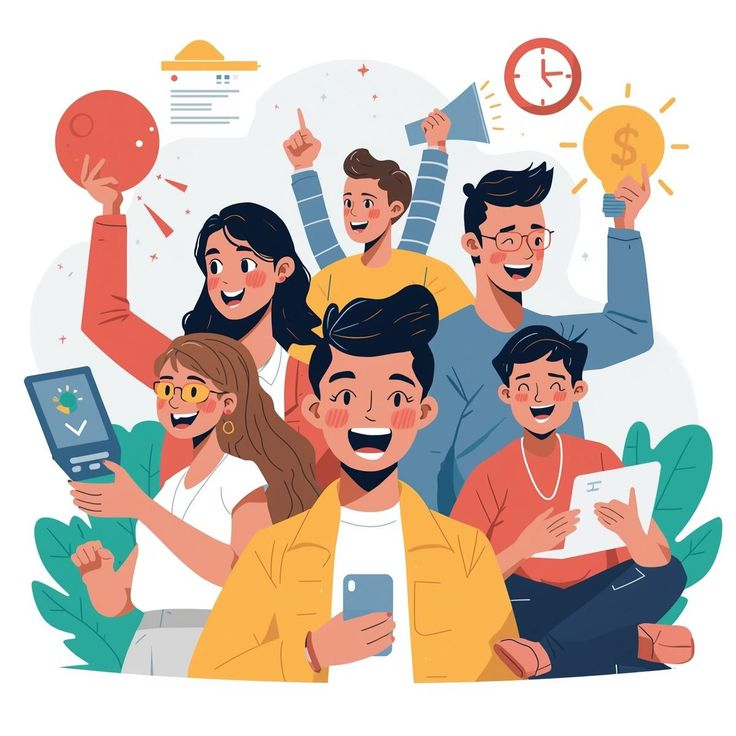

IMG 1 · Desarrollo Integral

🔍 Clic para ampliarFortalecimiento del Potencial Humano
Impulso del aprendizaje colectivo, la generación de ideas y la actualización de competencias estratégicas.
Conjunto de estrategias y actividades que realizan las organizaciones para fortalecer los conocimientos, habilidades, competencias y capacidades de sus colaboradores, impulsando el aprendizaje continuo y la gestión del conocimiento.
"Los procesos para desarrollar a las personas son el conjunto de estrategias y actividades que realizan las organizaciones para fortalecer los conocimientos, habilidades, competencias y capacidades de sus colaboradores."
Estos procesos buscan mejorar el desempeño de los trabajadores, promover su crecimiento profesional y prepararlos para asumir nuevos retos dentro de la organización. También permiten que las empresas se adapten a los cambios y aprovechen mejor el conocimiento de sus colaboradores.

🔍 Clic para ampliarImpulso del aprendizaje colectivo, la generación de ideas y la actualización de competencias estratégicas.
El objetivo principal es fortalecer las competencias de los colaboradores para mejorar su desempeño y contribuir al cumplimiento de los objetivos de la organización.
Mejorar los conocimientos y habilidades de los trabajadores para su labor cotidiana.
Promover el aprendizaje continuo a lo largo de toda la trayectoria laboral.
Preparar a los colaboradores para nuevos cargos, desafíos y responsabilidades.
Facilitar la adaptación a los cambios tecnológicos, culturales y organizacionales.
Mejorar la productividad y calidad del trabajo en todas las áreas.
Favorecer el crecimiento profesional y la autorrealización del trabajador.
Compartir y conservar el conocimiento clave dentro de la organización.
Preparar a los trabajadores para las necesidades futuras y de sostenibilidad de la empresa.

🔍 Clic para ampliarEquipos motivados y preparados técnicamente para responder a los objetivos de productividad y crecimiento institucional.
Principios esenciales que orientan la inversión formativa y el aprendizaje en las organizaciones modernas.
El desarrollo de las personas debe mantenerse durante toda su vida laboral y no limitarse a una capacitación específica.
Las actividades de formación y desarrollo deben estar relacionadas con las necesidades y objetivos de la organización.
Buscan mejorar el desempeño actual y preparar a los colaboradores para asumir nuevos retos y responsabilidades.
Permiten fortalecer conocimientos, habilidades, actitudes y comportamientos necesarios para realizar adecuadamente las funciones laborales.
Deben responder a los cambios tecnológicos, sociales y económicos que afectan al mundo laboral contemporáneo.
El trabajador debe participar activamente en su propio proceso de aprendizaje, autogestión y desarrollo personal.
Permiten crear, compartir, conservar y utilizar el conocimiento que existe dentro de la organización.
Cuatro ejes articulados: Formación, Desarrollo, Aprendizaje y Administración del Conocimiento.
La formación es el proceso mediante el cual los colaboradores adquieren o fortalecen conocimientos, habilidades y competencias necesarias para desempeñar adecuadamente sus funciones.
Modalidades de formación: Puede realizarse mediante cursos, talleres, capacitaciones, seminarios, entrenamientos, inducciones y programas de actualización.
Una empresa implementa una capacitación para enseñar a sus empleados a utilizar un nuevo programa informático que será utilizado en sus actividades laborales.
El desarrollo busca fortalecer las capacidades de los colaboradores a mediano y largo plazo, preparándolos para asumir nuevos desafíos, cargos y responsabilidades dentro de la organización.
A diferencia de una capacitación puntual, el desarrollo tiene una visión más amplia y está directamente relacionado con el crecimiento profesional y plan de carrera del trabajador.
Una empresa identifica que una trabajadora tiene potencial para convertirse en líder de un equipo. Por esta razón, le brinda formación en liderazgo, comunicación, resolución de conflictos y toma de decisiones.

🔍 Clic para ampliarEl desarrollo profesional genera compromiso, satisfacción laboral y equipos con alta capacidad de liderazgo y resiliencia.
El aprendizaje es el proceso mediante el cual las personas adquieren y desarrollan conocimientos, habilidades y comportamientos a través de la formación, la experiencia y la interacción con otras personas.
Dentro de una organización, el aprendizaje puede darse tanto de manera formal (estructurada en programas) como informal (en la dinámica cotidiana).
Un trabajador aprende a solucionar un problema de un sistema informático observando a un compañero con mayor experiencia. Posteriormente, utiliza ese conocimiento cuando se presenta una situación similar.
La administración del conocimiento consiste en identificar, organizar, conservar, compartir y utilizar el conocimiento que poseen las personas y la organización.
Su finalidad es evitar que conocimientos importantes se pierdan y lograr que puedan ser aprovechados por todos los colaboradores para generar valor sostenido.
Un trabajador lleva varios años realizando un procedimiento específico y está próximo a retirarse. La empresa documenta su experiencia y crea un manual para que otros empleados puedan aprender y continuar realizando correctamente el procedimiento.

🔍 Clic para ampliarEl conocimiento compartido y preservado en manuales, tecnologías y cultura organizacional se convierte en la mayor ventaja competitiva.
Los cuatro subprocesos están íntimamente conectados entre sí y forman un ciclo formativo continuo:
Permite adquirir conocimientos y habilidades iniciales y técnicas para el puesto.
Fortalece esas capacidades y prepara al trabajador para nuevos retos y liderazgos.
Permite aplicar, adaptar y mejorar continuamente lo aprendido en la práctica cotidiana.
Permite conservar, documentar y compartir lo aprendido dentro de toda la organización.
Los procesos para desarrollar a las personas son fundamentales porque permiten que tanto los trabajadores como las organizaciones crezcan, innoven y se adapten proactivamente a las transformaciones del entorno.
Una adecuada gestión del desarrollo humano contribuye directamente a:
Normas y directrices internacionales que sustentan el aprendizaje permanente y la gestión del conocimiento.